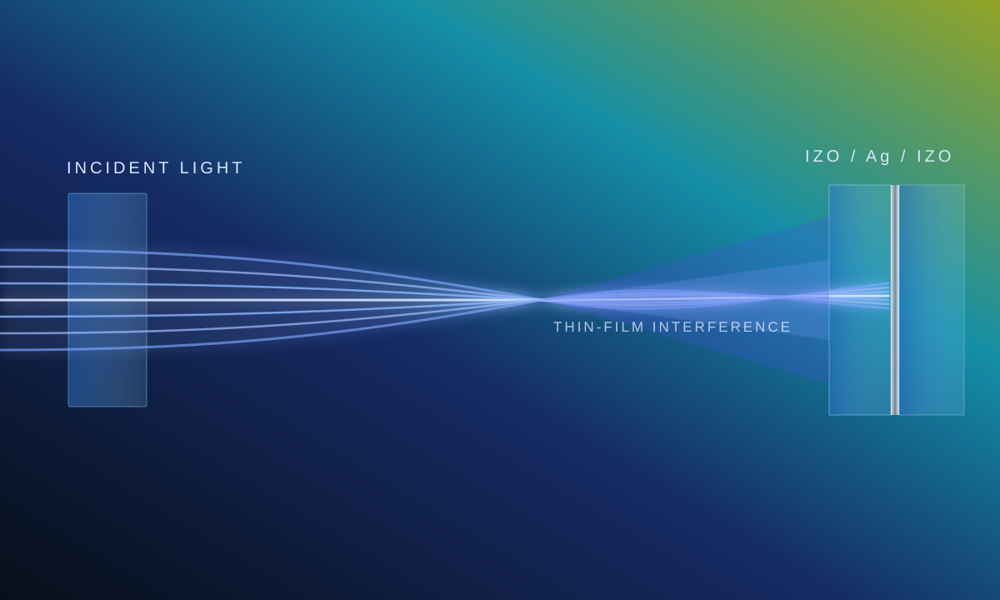
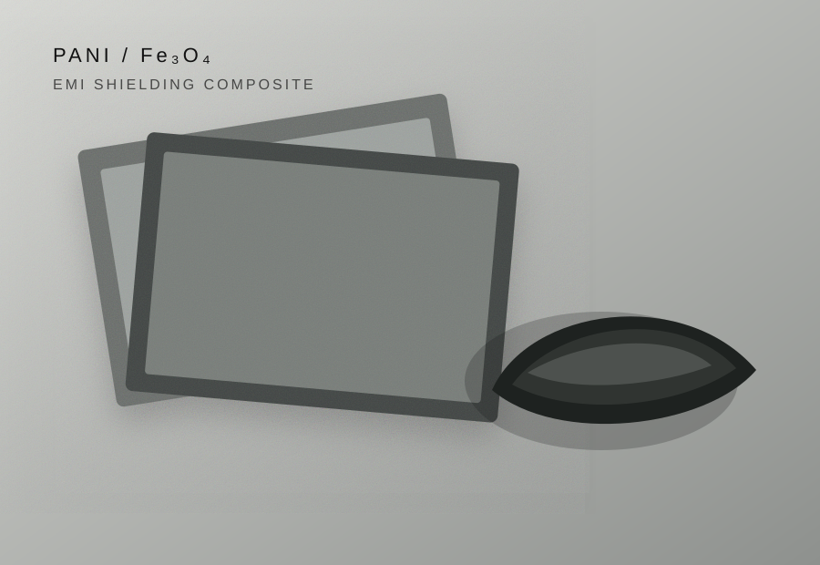
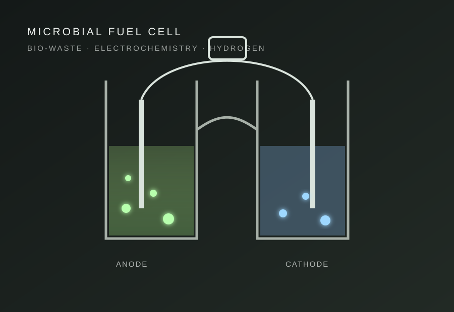

Featured research
Master’s
thesis
Optical design of transparent conducting multilayers, with ideal simulations treated as design limits rather than guaranteed fabricated-device gains.
M.Sc. Thesis · NCPRE, IIT Bombay
02 / 04 · Academic CV & research
Experimental materials physics, thin-film photonics, extreme-condition spectroscopy and an emerging direction in quantum-device nanofabrication.

Optical design of transparent conducting multilayers, with ideal simulations treated as design limits rather than guaranteed fabricated-device gains.
Investigated IZO/Ag/IZO oxide–metal–oxide electrodes for photovoltaic devices, with emphasis gradually shifting toward photonics and the physical interpretation of light propagation through nanoscale multilayers.
Experience across cleanroom deposition, spectroscopy under pressure and coordinated experiments at a national synchrotron facility.
Joining a National Quantum Mission nanofabrication laboratory. The detailed assignment is being finalised, with the broader direction connected to fabrication processes for quantum-computing hardware.
Optical modelling, deposition-aware analysis and characterization of multilayer transparent conducting structures for photovoltaic devices.
Investigated Na₂Cu₂TeO₆ using diamond anvil cells and a 532 nm Raman setup, with measurements extending to approximately 12 GPa. The spectra showed pressure-dependent intensity redistribution and changes near 7 GPa that motivated further structural study.
Participated as a BARC team member in a seven-day experimental campaign at the Extreme Condition XRD Beamline, completing safety training and contributing to high-pressure measurements.
Projects showing a broader range across materials, sustainable-energy experiments, electronics and scientific visual communication.

Synthesised magnetite and an in-situ polyaniline composite, connecting FESEM, XRD and FTIR characterization with VNA shielding measurements.

Worked on assembly and chemical preparation for a bio-waste-based microbial fuel-cell project exploring hydrogen production.
Designed a non-microprocessor light-and-sound random signal generator as an electronics project for rural animal deterrence.
Created scientific diagrams for colleagues' thesis projects using Adobe Illustrator and Affinity Designer.
Led an eight-person departmental team in a multi-phase community support project during the coronavirus period.
Designed a digital guide for incoming M.Sc. Physics students, combining information architecture, web design and student coordination.
Important academic development and leadership activities arranged chronologically.
Focused exposure to semiconductor epitaxy, device structures and material platforms relevant to emerging quantum technologies.
Attended focused training covering optics and photonics, strengthening the connection between my thin-film work and broader light–matter interaction problems.
Led and represented two M.Sc. Physics batches, coordinated academic and student matters, and supported department-level activities.
Secured IIT JAM All India Rank 84, placed 5th as a member of the IIT Bombay photography team at Inter IIT 7.0, and won 3rd prize in a PG-Cult photography competition.
Attended the Fourth International Conference on Recent Advances in Fundamental and Applied Sciences and an online workshop on Testing Aspects of General Relativity organised by IIT Gandhinagar.
RF magnetron sputtering, metal evaporation, cleanroom workflow and vacuum handling.
UV–Vis–NIR, Raman spectroscopy, four-point probe, profilometry and XRD exposure.
SETFOS, Drude-model interpretation, photon-flux calculations and multilayer optics.
Python, Adobe Illustrator, Affinity Designer and scientific data visualization.